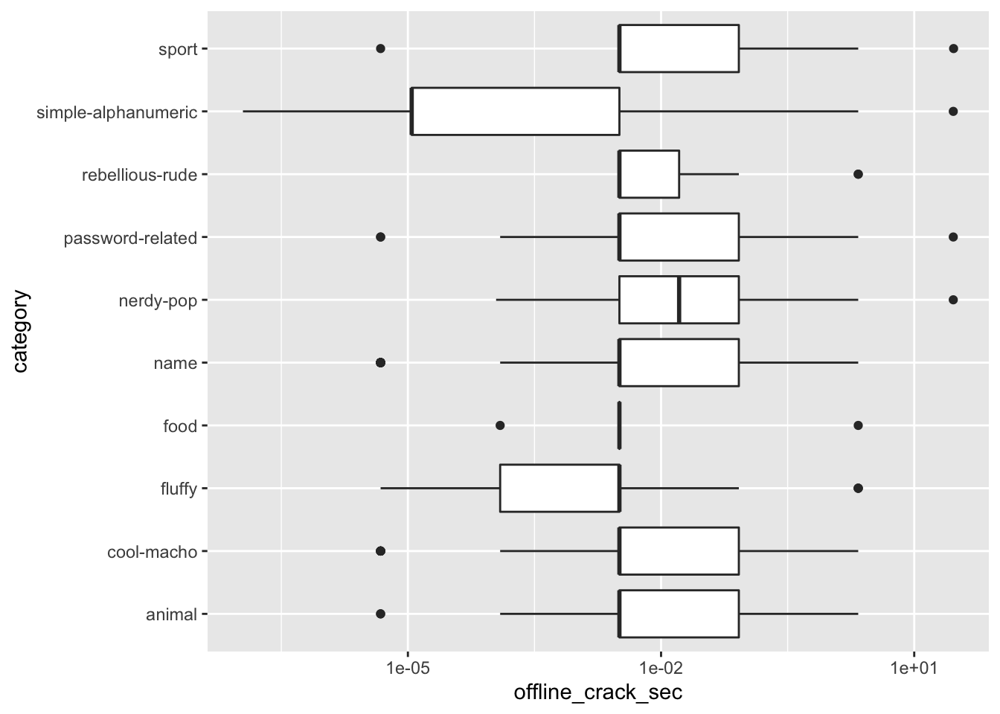
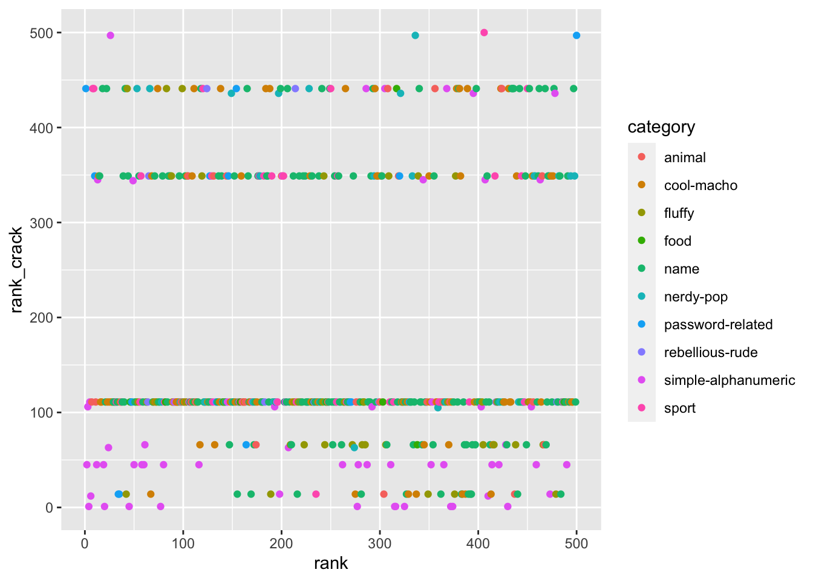

I just found out about Tidy Tuesday, an educational exercise from the R for Data Science folks. The idea is that they publish a dataset every Tuesday for people to play around with. If you make something you’re proud of you can publish it on Twitter and use the hashtag #tidytuesday. I haven’t tried it before, but today’s one was a topic that was of interest to me–computer security and passwords.
Data Loading
I figured out how to load directly from the online csv.
library(dplyr)
library(ggplot2)
passwords <- readr::read_csv('https://raw.githubusercontent.com/rfordatascience/tidytuesday/master/data/2020/2020-01-14/passwords.csv')## Parsed with column specification:
## cols(
## rank = col_double(),
## password = col_character(),
## category = col_character(),
## value = col_double(),
## time_unit = col_character(),
## offline_crack_sec = col_double(),
## rank_alt = col_double(),
## strength = col_double(),
## font_size = col_double()
## )passwords <- tbl_df(passwords)
glimpse(passwords)## Observations: 507
## Variables: 9
## $ rank <dbl> 1, 2, 3, 4, 5, 6, 7, 8, 9, 10, 11, 12, 13, 14, 15, …
## $ password <chr> "password", "123456", "12345678", "1234", "qwerty",…
## $ category <chr> "password-related", "simple-alphanumeric", "simple-…
## $ value <dbl> 6.91, 18.52, 1.29, 11.11, 3.72, 1.85, 3.72, 6.91, 6…
## $ time_unit <chr> "years", "minutes", "days", "seconds", "days", "min…
## $ offline_crack_sec <dbl> 2.170e+00, 1.110e-05, 1.110e-03, 1.110e-07, 3.210e-…
## $ rank_alt <dbl> 1, 2, 3, 4, 5, 6, 7, 8, 9, 10, 11, 12, 13, 14, 15, …
## $ strength <dbl> 8, 4, 4, 4, 8, 4, 8, 4, 7, 8, 8, 1, 32, 9, 9, 8, 8,…
## $ font_size <dbl> 11, 8, 8, 8, 11, 8, 11, 8, 11, 11, 11, 4, 23, 12, 1…Data Munging
The data variable types were already pretty well auto-classified but the category needed to be made into a factor.
passwords$category <- as.factor(passwords$category)Exploration
I figured I would look at them by category. Here is the distribution by category. Some had NA category.
table(passwords$category, useNA = "ifany")##
## animal cool-macho fluffy food
## 29 79 44 11
## name nerdy-pop password-related rebellious-rude
## 183 30 15 11
## simple-alphanumeric sport <NA>
## 61 37 7prop.table(table(passwords$category, useNA = "ifany"))##
## animal cool-macho fluffy food
## 0.05719921 0.15581854 0.08678501 0.02169625
## name nerdy-pop password-related rebellious-rude
## 0.36094675 0.05917160 0.02958580 0.02169625
## simple-alphanumeric sport <NA>
## 0.12031558 0.07297830 0.01380671passwords <- passwords %>% filter(!is.na(category))Here’s how hard the passwords were to crack by category. They were all pretty easy to crack.
table(passwords$offline_crack_sec)##
## 1.11e-07 1.11e-06 4.75e-06 1.11e-05 0.000111 0.000124 0.000622 0.00111
## 11 2 31 18 3 39 1 5
## 0.00321 0.0111 0.0224 0.0835 0.806 2.17 29.02 29.27
## 233 1 4 87 5 56 3 1passwords %>% ggplot(aes(x = category, y = offline_crack_sec)) +
geom_boxplot() + scale_y_log10() + coord_flip()
Popularity vs Difficulty to Crack
Was there a correlation between how popular they were and how easy they were to crack? Not clearly.
passwords %>% mutate(rank_crack = min_rank(offline_crack_sec)) %>%
ggplot(aes(x = rank, y = rank_crack, color = category)) +
geom_point()
Conclusion
I couldn’t figure out much to do with this dataset but at least I got an idea of how to load a raw csv from Github.